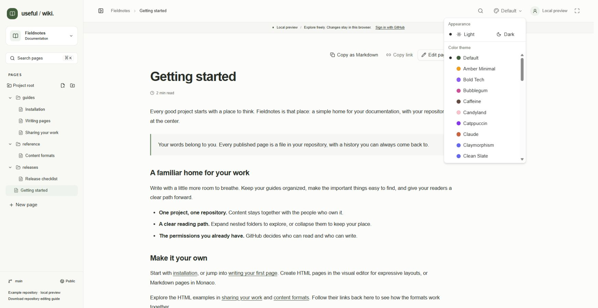
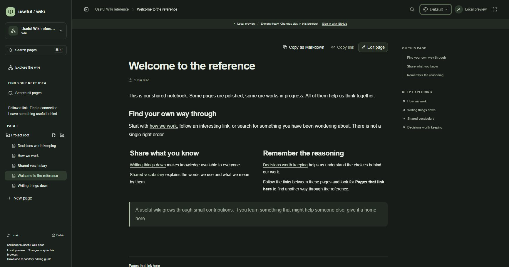
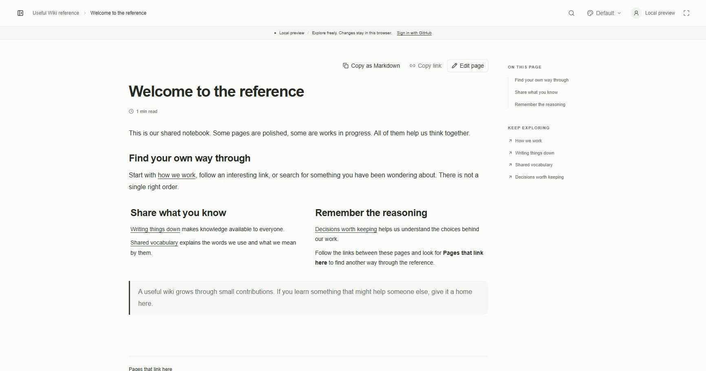
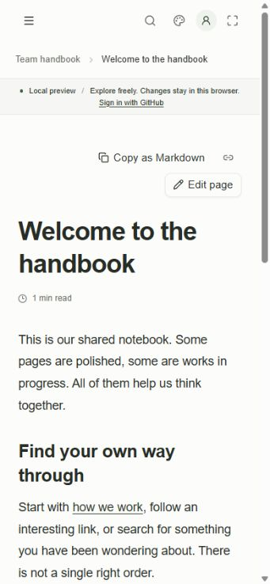
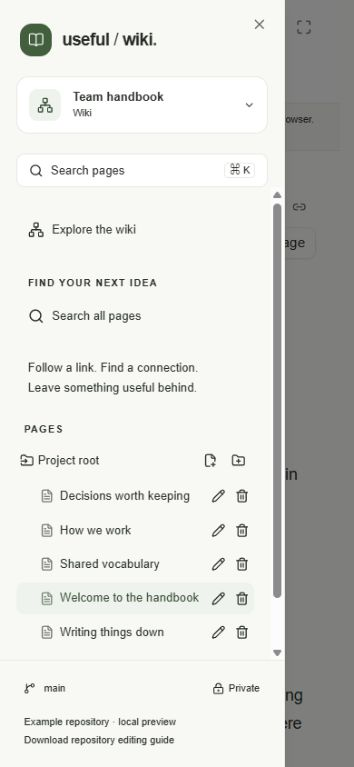
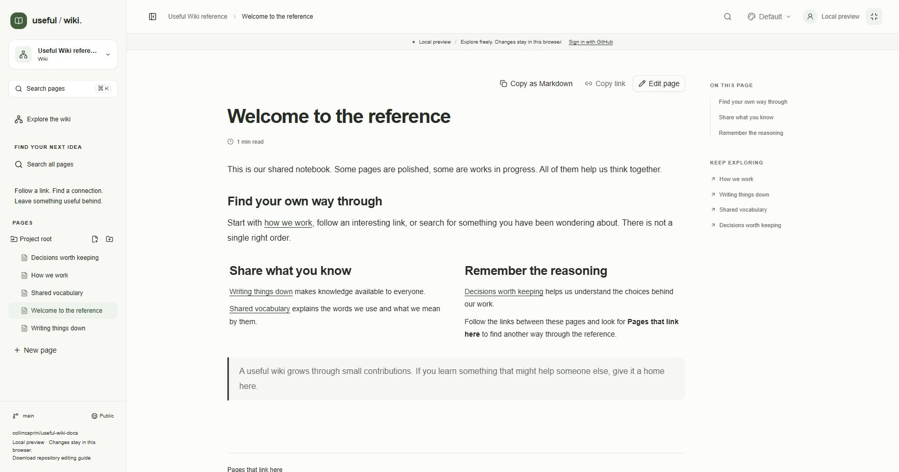

Choose a reading appearance, make room for the document, and use the keyboard in the right context. A shortcut can do different things in page navigation, rich text, a code block, or the Markdown source editor.
Choose the palette button in the header, labeled Choose theme. It is available on the dashboard and inside projects.
Under Appearance, choose Light or Dark.
Under Color theme, choose a palette. Scroll the menu to see all 43 choices.
Click outside the menu or press Escape to close it. Your choice takes effect immediately.
The initial palette is Default, with the app's sage colors. Palette and mode are independent: you can use any palette in Light or Dark mode. The app does not expose System or Sepia modes.

Choose Light or Dark independently of the palette. This local-preview menu shows Default selected and the start of the scrollable palette list.
Your choice is stored in the current browser and synchronized between its open app tabs. It affects the interface, readers, rich editors, Markdown editor, and code surfaces without saving a repository change. It is not a project setting and does not choose an appearance for other readers.

An example page in the Useful Wiki reference local preview in Dark mode. Columns share the page background. Appearance changes do not publish edits to its content.
Default, Amber Minimal, Bold Tech, Bubblegum, Caffeine, Candyland, Catppuccin, Claude, Claymorphism, Clean Slate, Cosmic Night, Cyberpunk, Doom 64, Elegant Luxury, GitHub, Graphite, Kick, Kodama Grove, Midnight Bloom, Mocha Mousse, Modern Minimal, Mono, Nature, Neo Brutalism, Northern Lights, Ocean Breeze, Pastel Dreams, Perpetuity, Quantum Rose, Retro Arcade, Solar Dusk, Spotify, Starry Night, Stripe, Sunset Horizon, Supabase, T3 Chat, Tangerine, Twitch, Twitter, Vercel, Vintage Paper, and Windows 98.
A theme change preserves explicit text formatting inside the document. To remove a font override, select the text while editing and choose Theme font under Font family. To remove an explicit text color, select the text and use Use theme text color, which appears when a color override is active. These formatting edits change the document and need a normal save.
Code syntax has light and dark palettes. Changing the interface's color palette does not create a new language-highlighting scheme, and choosing a theme does not discard editor content or undo history.
On desktop, choose Collapse sidebar in the header to give the content more room.
Choose Expand sidebar to restore it. The app remembers this preference in the browser.
On a small screen, choose Open navigation to open the sidebar as a drawer. Choose a page to navigate and close the drawer.
Tree actions are shown on hover or keyboard focus on desktop and remain visible on touch devices. Content columns stack on narrow screens. The right-hand On this page and Keep exploring panels are shown only on wide screens.

Collapse sidebar gives the local-preview document more horizontal space; the header control restores navigation.

The narrow-screen reader keeps header actions available while the sidebar and right-hand outline are hidden.

Open navigation reveals the mobile drawer. This local-preview example keeps page actions visible for touch users.
Choose Enter fullscreen in the header.
Continue reading or editing in the browser's fullscreen view.
Choose Exit fullscreen or press Escape to return to the normal window.
The button is disabled when fullscreen is unavailable in the browser. If a request fails, the app displays an error that can be dismissed. Fullscreen changes the browser presentation, not the document.

This local-preview capture shows fullscreen active on an example page. Choose Exit fullscreen or press Escape to return to the normal browser view.
Mod means Ctrl on Windows/Linux and Cmd on macOS; Alt is Option on macOS. Where a command differs, both versions are listed. Put focus in the relevant surface first. Editor save shortcuts work while focus is inside the content editor, its toolbar, or its content-tab controls; use the save button when focus is in Page title or Describe your change.
Key | Context and result |
|---|---|
Mod+K | Open project search, except when Markdown Monaco owns the command chord. |
Enter in search | Search page content when the query has at least two characters. |
Up / Down | With a sidebar tree entry focused, move to the previous or next visible entry. |
Home / End | Focus the first or last visible sidebar entry. |
Right | Expand a focused folder; if already expanded, focus its first child. |
Left | Collapse an expanded folder, or focus the entry's parent. |
Enter | Open a focused page or the focused folder's index. |
Space | Toggle a focused folder; open a focused page. |
F2 | Open Rename or move for the focused entry when you have write access. |
Delete | Open the focused entry's deletion preview when you have write access. Confirmation is still required. |
Key | Result inside the open folder picker |
|---|---|
Up / Down | Move between visible folders. |
Home / End | Focus Project root or the last visible folder. |
Right / Left | Expand and enter a folder, or collapse it and return to its parent. |
Enter / Space | Select the focused folder and close the picker. |
Escape | Close the picker. |
The Rename or move dialog uses its own Folder select control. The tree shortcuts above refer to the new-page folder picker.
Key | Result in the rich editor |
|---|---|
Mod+S | Save the page. During a save, further save requests are ignored and the app disables editing. |
Mod+Z | Undo a document edit. |
Mod+Shift+Z or Mod+Y | Redo a document edit. |
Mod+B / Mod+I / Mod+U | Toggle bold, italic, or underline on selected text or subsequent typing. |
Mod+Shift+S / Mod+E | Toggle strikethrough or inline code. |
Mod+Alt+1 through Mod+Alt+6 | Toggle the corresponding heading level. |
Mod+Alt+0 | Change the current block to an ordinary paragraph. |
Mod+Shift+7 / Mod+Shift+8 / Mod+Shift+9 | Toggle a numbered list, bullet list, or checklist. |
Mod+Shift+B | Toggle a blockquote. |
Mod+Alt+C | Toggle a code block from the rich document. |
Mod+Shift+L / E / R / J | Set alignment to left, center, right, or justified. |
Shift+Enter | Insert a line break within the current text block. |
Tab in prose | Insert a tab stop equivalent to four character widths. |
Tab / Shift+Tab in a list | Indent or outdent the current bullet, numbered item, or checklist item. |
Shift+Tab in prose | Decrease paragraph indentation. |
Mod+] / Mod+[ | Increase or decrease paragraph indentation, from zero to eight levels. |
Tab / Shift+Tab in a table | Move between table cells. |
Mod+Enter | Add a paragraph at the end of the document and move there; useful for leaving a nested layout. |
Escape | Release rich-editor focus. |
Enter in Font size | Apply a valid size from 8 to 144 pixels. Leaving the field also applies it. |
Enter / Escape in Link URL | Apply the link, or close the link editor and return focus to the document. |
These keys act on the focused editor. They do not make the visual editor a Markdown source editor. Use toolbar controls for operations without a listed shortcut; the Rich text and layouts guide covers each control.
Key | Result while editing a code block |
|---|---|
Enter | Insert a newline, including on an empty line. |
Tab / Shift+Tab | Indent by two spaces or outdent the code. |
Mod+Enter | Move to a paragraph immediately after this code block, including inside a column or tab panel. |
Escape | Move focus to the block's Copy code button so you can leave the code editor. |
Mod+Z | Undo using the surrounding document's history. |
Mod+Shift+Z or Mod+Y | Redo using the surrounding document's history. |
Mod+S | Save the page containing the code block. |
Mod+C | Copy selected code. The Copy code button copies the whole block. |
The code editor provides syntax highlighting and text editing, not code execution. In reading mode you can select and copy code, while edit-only controls are hidden.
Key | Result while Markdown Monaco has focus |
|---|---|
Mod+S | Save the raw Markdown page. |
Mod+Z / Mod+Shift+Z | Undo or redo source edits using Monaco's own history. |
Mod+F | Find text inside this Markdown document. |
Ctrl+H on Windows/Linux; Cmd+Option+F on macOS | Open source find and replace. |
F1 | Open the command palette to find editing, selection, indentation, and other Monaco commands. |
Ctrl+G on Windows/Linux and macOS | Go to a line in the source. |
Tab / Shift+Tab | Indent or outdent source while Tab is in editing mode. |
Ctrl+M on Windows/Linux; Ctrl+Shift+M on macOS | Toggle whether Tab edits indentation or moves focus out of the source editor. |
Mod+K followed by a command key | Use Monaco command chords. This context does not open project search. |
Monaco also provides multiple cursors, line operations, code folding, and selection commands. Use F1 or its context menu to discover available commands and their platform-specific keys. Plain-editor fallback mode supports ordinary text entry and saving but does not provide Monaco's full command set.
Source find/replace searches the current editor buffer. Search pages searches the project. To read the rendered Markdown, save and return to reading view; there is no simultaneous Markdown preview toggle.
Focused control | Keys and result |
|---|---|
Content tab button | Left / Right switches to the previous or next tab, wrapping at the ends. Home / End selects the first or last tab. |
Column resize divider | Left / Right changes adjacent column widths in two-percentage-point steps, within the supported limits. |
Column resize divider with pointer | Drag to resize. Double-click to reset the column group to equal widths. |
Switching a content tab changes which panel you see. It does not reorder tabs or alter their content. Use Rename active tab to reveal tab-name and left/right reorder controls. Use the column or tab controls to add or remove items; removed content can be restored with document Undo before it leaves that editing history.
Check which control currently has focus. A browser address bar, page-title field, tree row, and code editor have different key handling.
Use the visible action button once to confirm the operation you need.
For Markdown commands, use F1 to inspect the editor's command and key binding. For project search while editing Markdown, choose the sidebar or header search button.
For save failures, read the error and preserve your draft before retrying; see Troubleshooting.
Continue with Navigation and search or Writing and saving pages.